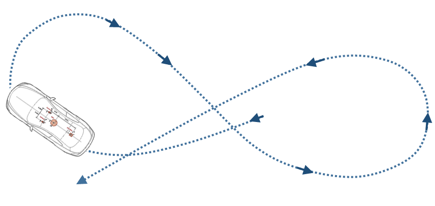

欢迎使用Apollo传感器标定服务。本文档提供64线激光雷达与组合惯导之间的外参标定服务使用流程。
文档概览
- 服务概述
- 准备工作
- 标定数据录制
- 标定数据上传以及任务创建
- 标定结果获取
- 错误说明
服务概述
本服务作为Apollo整车传感器标定功能中的一部分，提供Velodyne 64线激光雷达HDL-64ES3与IMU之间的外参标定功能。标定结果可用于将激光雷达检测的障碍物转换至IMU坐标系，进而转到世界坐标系下。标定结果以 .yaml 文件形式返回。
准备工作
为了更好地使用本服务，请按以下顺序进行准备工作：
1.安装Apollo所支持的64线激光雷达和组合惯性导航系统，下载镜像安装docker环境。
2.开机并启动64线激光雷达以及组合惯导系统。Novatel组合惯导初次上电时需要校准。此时应将车在开阔地带进行直行、左右转弯等操作，直至惯导初始化完成。
3.确认本服务所需传感器数据的topic均有输出。如何查看传感器有数据输出？
本服务所需的topics如下表1所示：
表1. 传感器topic名称
| 传感器 | Topic名称 | Topic发送频率（Hz） |
|---|---|---|
| HDL-64ES3 | /apollo/sensor/velodyne64/VelodyneScanUnified | 10 |
| INS | /apollo/sensor/gnss/odometry | 100 |
| INS | /apollo/sensor/gnss/ins_stat | 2 |
4.确认车辆采集标定数据时的定位状态为56。如何查看车辆定位状态？
5.选择合适的标定场地。
标定的地点需要选择无高楼遮挡、地面平坦、四周有平整的建筑物并且可以进行如图1所示8字轨迹行驶的地方。一个合适的标定场地如图2所示。

图1 标定所需车辆行驶的轨迹。

图2 标定场地。
标定数据录制
准备工作完成后，将车辆驶入标定场地进行标定数据的录制。
1.录制脚本工具为 apollo/script/lidar_calibration.sh。
2.运行以下命令，开始数据录制工作：
bash lidar_calibration.sh start_record
所录制的bag在 apollo/data/bag 目录下。
3.以8字形轨迹驾驶汽车，将车速控制在20-40km/h，并使转弯半径尽量小。行驶的时长3分钟即可，但要保证标定数据至少包含一个完整的8字。
4.录制完成后，输入以下命令结束数据录制：
bash lidar_calibration.sh stop_record
5.随后，程序会检测所录制的bag中是否含有所需的所有topics。检测通过后，会将bag打包成 lidar_calib_data.tar.gz 文件，内容包括录制的rosbag以及对应的MD5校验和文件。
标定数据上传以及任务创建
录制好标定数据后，登录至标定服务页面以完成标定。
1.进入标定服务页面，在任务管理列表下点击新建任务按钮以新建一个标定任务。
2.进入新建任务页面后，需先填写简单的任务描述，然后点击上传数据并创建任务按钮，选择上传标定文件，则可以开始进行数据上传。
3.开始上传数据后，页面将跳转至任务流程视图。流程视图图示为上传进度页面，待其到达100%后则可以开始进行标定。上传期间请保持网络畅通。
4.数据上传完毕后，将开始数据校验流程，如图3所示。校验流程可以保证数据完整以及适合标定，校验项目有：
- 数据包解压校验
- MD5校验
- 数据格式校验
- 8字路径与GPS质量校验
- 初始外参评估合格
若数据校验失败，则会提示相应错误。错误的原因请参照错误说明。

图3 标定数据校验流程。
6.校验通过后将开始标定流程，一个标定进度页面会展示给用户，如图4所示。视数据大小和质量的影响，整体标定时间大约持续10-30分钟，用户可以随时进入该页面查看当前任务的标定进度。
图4 标定进度页面。
7.标定完成后，进入人工质检环节。点击[查看]按钮会弹出用于质检的拼接点云，此时可以开始人工质检。若质检通过，则可以点击确认入库按钮以保存标定结果。最后，点击下载数据按钮来下载标定结果，至此标定流程完成。如何进行质检？
标定结果获取
1.获取标定结果前，本服务需要用户根据可视化效果确认标定结果的质量。
2.确认该标定结果质量合格后，用户可点击确认入库按钮将标定结果入库。之后可以在任务页面进行下载，未通过质检并入库的标定结果在任务页面不会出现下载地址。
3.外参格式解析。外参以yaml文件形式返回给用户，下面是一个外参结果文件的样例。 表1中说明了几个字段的含义。
header:
seq: 0
stamp:
secs: 1504765807
nsecs: 0
frame_id: novatel
child_frame_id: velodyne64
transform:
rotation:
x: 0.02883904659307384
y: -0.03212457531272153
z: 0.697030811535172
w: 0.7157404339725393
translation:
x: 0.000908140840832566
y: 1.596564931858745
z: 1
表2. 外参YAML文件字段含义
| 字段 | 含义 |
|---|---|
| header | 头信息，主要包含标定时间 |
| child_frame_id | 所标定的源传感器ID，此时为HDL-64ES3 |
| frame_id | 所标定的目标传感器ID，此时为Novatel |
| rotation | 以四元数表示的外参旋转部分 |
| translation | 外参的平移部分 |
4.外参使用方式
首先在/apollo目录下输入以下命令创建标定文件目录：
mkdir -p modules/calibration/data/[CAR_ID]/
其中，CAR_ID为标定车辆的车辆ID。然后将下载的外参yaml文件拷贝至对应的CAR_ID 文件夹内。最后，在启动hmi后，选择需正确的CAR_ID即可载入对应的标定yaml文件。
错误说明
- 数据解包错误：上传的数据不是一个合法的
tar.gz文件。 - MD5校验和错误：上传数据的MD5校验和与服务器端计算的MD5校验和不同，通常由网络传输问题引发。
- 数据格式错误：上传的数据不是一个rosbag，或者bag里缺少指定的topic或包含其他非指定的topic，服务器端标定程序读取失败。
- 无8字路径错误：在上传的数据中没有发现8字路径。需要确认录制的数据中是否包含至少一个8字形路径。
- 组合惯导定位精度不足：在上传的数据中发现定位状态不符合要求。需要确认在录制过程中的定位状态为56。